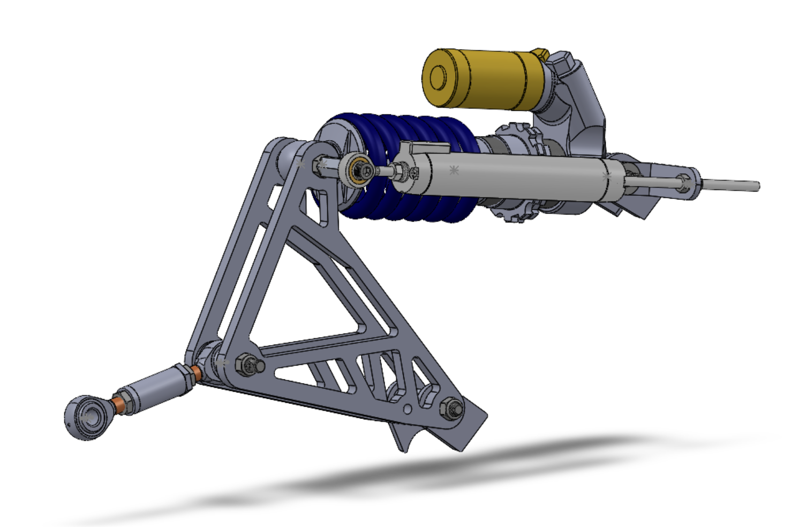
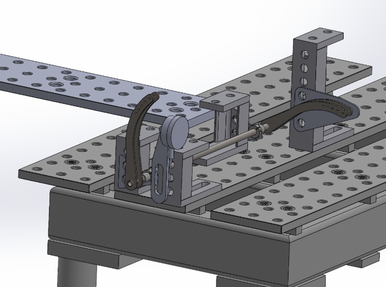
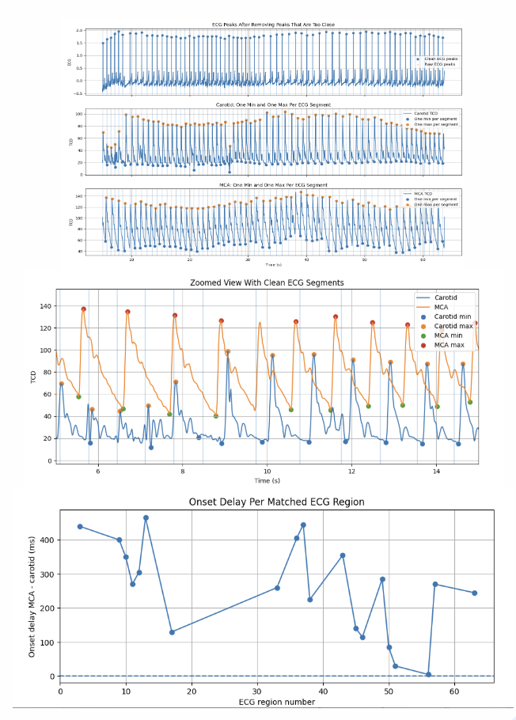
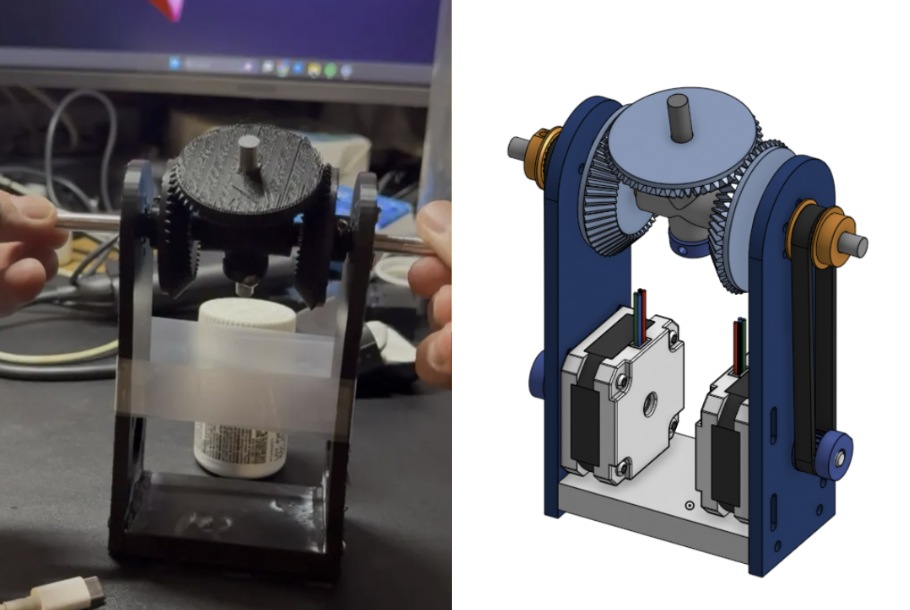
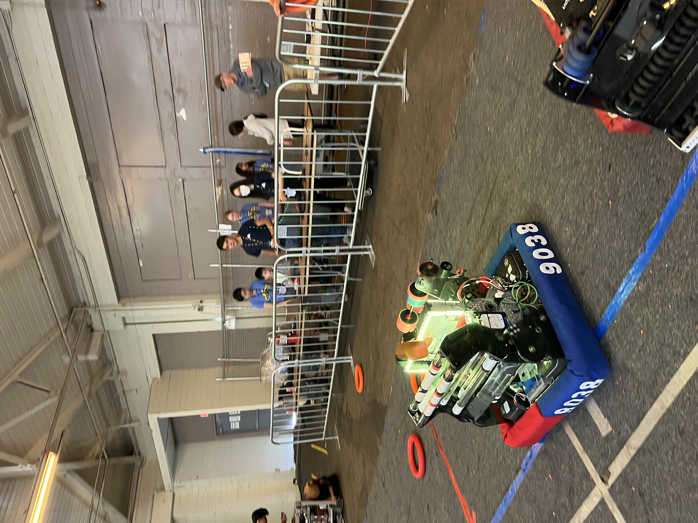
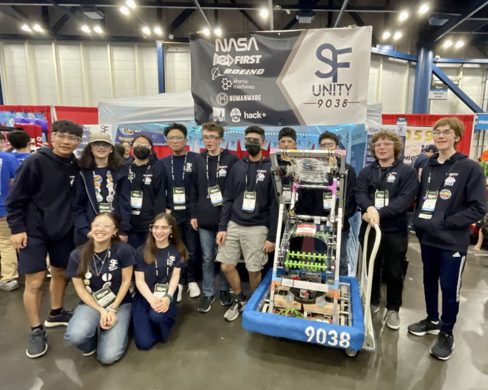
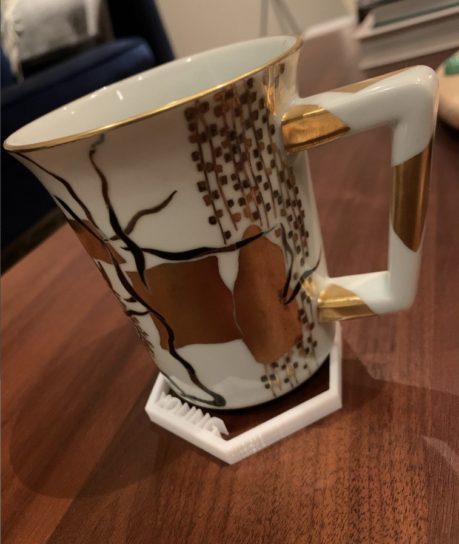

About Me
Engineering!
I am a UCLA Mechanical Engineering student focused on the full engineering loop: defining the problem, designing the system, validating the idea, manufacturing the hardware, and learning from testing. I am drawn to work where analytical engineering and hands-on execution meet.
My experience spans Formula SAE suspension design, aerospace manufacturing support systems, MEMS hardware, biomedical fluid-flow research, robotics, and 3D printed product development. Across these projects, I care most about building things that are useful, manufacturable, testable, and thoughtfully engineered.
I'm also drawn to print newspapers, finding the best burger in SF, climbing, Ultimate Frisbee, RC planes, board games, sci-fi movies, and dance. If any of these things resonate with you—whether in engineering or interests—I'd love to connect and chat about what we're working on.
SchoolUCLA
DegreeB.S. Mechanical Engineering
GPA3.855
RecognitionSamueli Foundation Centennial Scholar · Richard L. Gay Trust Scholar · Dean's Honor List · Samueli Research Scholar
HometownSan Francisco
Background
Skills, coursework, and interests.
Relevant Coursework
Fun Interests
Technical Projects
Selected engineering work.

Shock Packaging
Responsible engineer for Bruin Formula Racing shock packaging, translating suspension geometry, serviceability, and packaging constraints into manufacturable hardware.

Anti-Roll Bar Test Fixture
Designed and built a validation fixture for anti-roll bar stiffness testing, translating a vehicle dynamics question into repeatable bench data.

CSF Flow Analysis
Built Python tools to extract, clean, compare, and visualize cerebrospinal fluid datasets for research into Chiari malformation surgical outcomes.

Differential Wrist Mechanism
Part 1 of a 5/6-axis robotic arm: a custom end-effector wrist prototype driven by two NEMA 17 stepper motors.

Phoenix
Built Phoenix for FRC Crescendo 2024, contributing to chassis packaging, subsystem integration, and robust field performance.

Karl
Karl was SF Unity's first 2023 Charged Up robot: we adapted the Everybot base to lower CG, improve scoring, and keep the design compact and reliable for competition. I led fabrication, build-season coordination, sponsorship/grants, and team infrastructure while the robot qualified for the FIRST World Championship.

NovelForge Products
Designed, manufactured, and sold custom 3D printed home accessories through NovelForge, combining CAD, print production, and small-batch product development.
Professional Experience
Industry engineering roles.
Summer 2025
Northrop Grumman — Engineering Intern, Module Assembly & Test
Automated manual workflows with custom-designed software and hardware for cleanroom manufacturing support, helping boost training efficiency, reduce machine downtime, and eliminate FOD risk. Also supported material qualification work for flight-hardware testing by validating and documenting performance to aerospace standards.
Summer 2023
Atomic Machines — AMP Engineering Intern
Prototyped and fabricated production hardware for a MEMS manufacturing platform, designing components in SolidWorks and producing parts using a metal laser cutter and manual mill. Developed Python calibration scripts for testing platforms and modified existing code to improve accuracy and streamline testing workflows.
Leadership
Teams, products, and communities I helped build.
SF Unity Robotics
Founded and captained San Francisco's only independent FIRST Robotics Competition team, building the organization from the ground up. Led the design, manufacturing, and integration of two 125+ pound robots, each built in six weeks, then competed at the 2023 World Championship in Houston and earned a team award.
Beyond leading the broader design team, I was especially proud of the shooter mechanism, where the team had to balance performance, reliability, manufacturing limits, and match-to-match robustness under real schedule pressure.
NovelForge
Founded a 3D printed product business focused on custom home accessories. Designed products, managed fabrication, handled customer feedback, and shipped 400+ orders while earning Etsy Star Seller recognition for three consecutive years.
Bruin Formula Racing
Serve as a Shock Packaging Responsible Engineer on UCLA's Formula SAE team after contributing to suspension and aerodynamics work on Mk. X. Lead design decisions across vehicle interfaces and help maintain a team culture built around design reviews, manufacturing ownership, iteration, and testing-driven engineering.
Foundations Choreography
General member of Foundations Choreography! Joined on a whim in Spring 2026 and learned how to dance. It was fun, collaborative, and a great way to grow comfortable performing, learning choreography quickly, and supporting the team.
CFIP
Contributed to CFIP's program development and community coordination, focusing on collaborative engineering processes, stakeholder outreach, and operational support.
Contact
Let's build something.
I am interested in mechanism design, robotics, aerospace, manufacturing, vehicle dynamics, product development, and research-focused engineering roles.